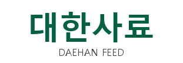

농장 정보
노란 칸에 입력하세요. 입력 내용은 이 기기에 자동 저장됩니다.
엑셀 불러오기: 기존 「양돈농장 수익 비용구조 시뮬레이션」 엑셀 파일의 노란 셀(1. 기초입력·2. 시뮬레이션·1-2. 사료구간)을 그대로 읽어 새 농장으로 추가합니다.
월별 실적
현재 기준값 (월별 실적에서 자동 계산)
목표 시나리오
목표 MSY와 예상 돈가를 넣으면 손익 변화를 바로 계산합니다.
민감도표 범위
사료 전환 효과 시뮬레이터
제안 사료로 바꿀 때 단가가 올라도 FCR·MSY·출하체중 개선으로 이익이 나는지 계산합니다 (목표 시나리오 기준, 연간).
구간별 사료 사용량·사료비
최근 3개월 평균 사용량(톤)과 단가를 넣으면 사용 비율을 표준 비율과 비교합니다.